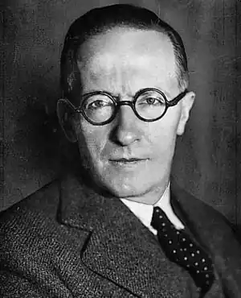
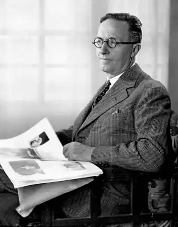

Жан Жироду(Giraudoux, Jean) (1882-1944), французький драматург і романіст, який прославився своїми гостросатеричними фантазіями. Іполит-Жан Жироду народився 29 жовтня 1882 в м. Беллак (департамент Верхня В'єнна), дитинство і юність провів у провінції Лімузен. У ранніх книгах (збірка оповідань Провінціалки — Provinciales, 1909, і роман Жюльєтта в країні чоловіків — Juliette au pays des hommes, 1924) примхливо видбилися поетичні спогади про життя рідного містечка і школи в Шатору, яку Жироду залишив, щоб продовжити освіту в Лаканале під Парижем. Пізніше, у Вищій нормальній школі, він зосередився на вивченні німецької літератури, стипендіатом провчився рік у Мюнхені (1905) і рік в Гарвардському університеті (1907). Однак прагнення до навчання зменшувалося в міру того, як зростав інтерес до письменницького ремесла. Вирішивши стати професійним літератором, Жироду для заробітку вступив на службу в Міністерство закордонних справ.
Жироду завжди зачаровував своїх читачів витонченим стилем і багатою уявою, але далеко не всі, особливо критики його перших творів, змогли вгадати за зовнішньою легкістю його стилю написання грунтовність і глибокий розум. Наприклад, багато хто визнав його військові щоденники "Коло читання для тіні" (Lectures pour une ombre, 1917) непробачно легковажними, але їхнє ставлення могло б змінитися, знай вони, що автор був двічі поранений в бою (Жироду перебував у діючій армії з 1914 по 1918 ).
У 1928 Л.Жуве (1887-1951) поставив першу п'єсу Жироду "Зігфрід" (Siegfried, 1928). Творчому об'єднанню Жироду і Жуве був уготований тріумф, їх дебютна постановка стала віхою в історії французького театру. У попередні кілька років було прийнято вважати Жироду страдаючим філософом. Більш тверезий погляд на його творчість дозволяє побачити в ньому не стільки філософа, скільки художника, головна заслуга якого — бездоганний і блискучий стиль. Коли в 1939 почалася Друга світова війна, Жироду перебував на вершині успіху, досягнувши визнання в літературній і дипломатичній діяльності. Добре розходилися відразу дві його книги — роман "Вибір обранців" (Choix des élus, 1939) і збірник есе "Повнота влади" (Pleins Pouvoirs, 1939), де широко і сміливо викладалася програма майбутньої Франції; п'єса "Ундіна" (Ondine, 1939) з великим успіхом йшла в театрі Жуве "Атеней". Однак в останні роки життя благодушню філософію письменника спіткали тяжкі випробування: до гіркоти від краху країни додалася болісна тривога за сина, який втік з дому з наміром приєднатися до де Голлю. Довгий час Жироду мав ілюзії щодо уряду Віші, але потім подав у відставку, цілком присвятивши себе літературній творчості. Помер Жироду в Парижі 31 січня 1944.